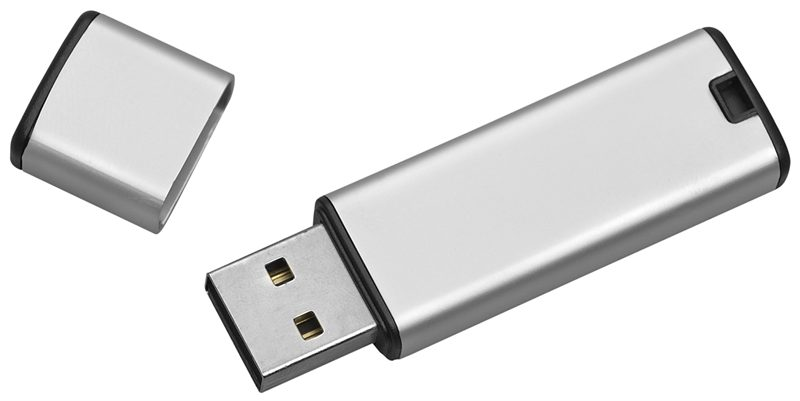
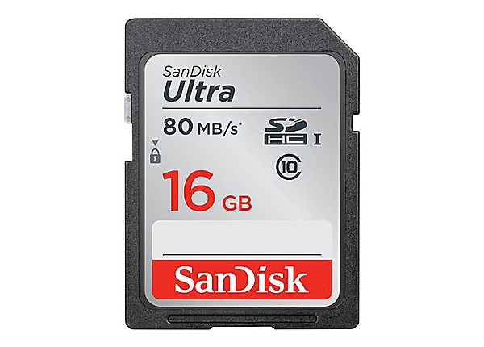

A memory stick functions as secondary storage in a computer storage.
Advantages:
Compact and portable.
Is strong.
Doesn’t need softwares to work (on most computers).
Not affected by magnetic fields.
Disadvantages:
Cant protect the data/files.
Easy to lose (because of their small size).
User needs to be careful when removing a memory stick from a computer. Wrong removal will corrupt the data and make it useless.

Flash Memory Cards
Flash memory cards are a form of erasable programmable read-only memory (EEPROM) and is another example of an SSD.
Uses:
Can store photos from cameras.
Used as Moblie phone memory cards.
Can store music files in MP3.
Backup storage in computer devices.
Advantages:
Compact and can be easily used in another computer for transferring files to another device.
Very strong.
Portable because of it's small size.
Disadvantages:
Expensive per gigabyte (GB) of memory compared to a Hard drive disk (HDD).
Can be used maximum amount of times.
Smaller storage than HDD.
